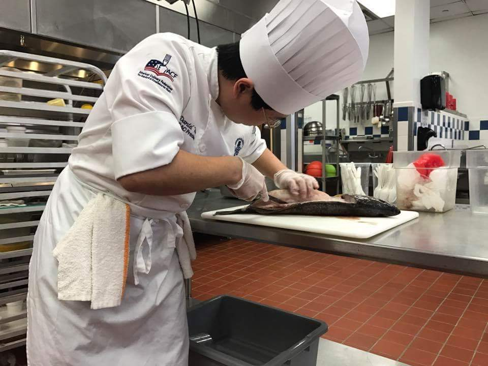

|  |
Daniel WernzStudent at Eastern Florida State College Founder and Student President of NSLS EFSC Chapter Student President of EFSC Palm Bay's Technology Club Southeast Regional Student Chef of the Year 2017 at American Culianary Federation I am pursuing my B.A.S. in Computer Information Systems Technology at Eastern Florida State College, and I graduated with my A.S. in Computer Programming and Analysis in December 2020. I received my A.S. in Culinary Arts from Le Cordon Bleu College for Culinary Arts Orlando in March 2017. I have worked in numerous kitchens including Mythos in Universal Studios Florida (even helped open Volcano Bay), and The Greenbrier Resort. In October 2018, a virus attacked my nervous system that made it difficult to stand and walk. I stuggled to recover and slowly got worse. In September 2019, my wife and I left the Greenbrier and moved back to Florida for me to rest and recover, and to start learning to program. In November 2019, I started going to a local gym, doing physical therapy exercises, and now, I can stand and walk without the use of my cane or crutches. My wheelchair has been collecting dust for over a year now. |
| Work | Dates | Position | Location |
|---|---|---|---|
| The Greenbrier Resort | November 2017 - September 2019 | Junior Apprentice | White Sulphur Springs, WV |
| Andrei's | April 2017 - October 2017 | Line Cook | Mims, FL |
| Mythos | November 2016 - September 2017 | Line Production Cook | Orlando, FL |
| Kohola Reef Cabana | May 2017 - June 2017 | Line Production Cook / Second Cook | Orlando, FL |
| Le Coq au Vin | November 2016 - January 2017 | Cook | Oralndo, FL |
| Le Cordon Bleu College of Culinary Arts Orlando | November 2015 - December 2016 | Student Worker | Orlando, FL |
| BSC America | April 2014 - February 2015 | Lane Captain Coordinator | Bel Air, MD |
| Sports Memories | October 2011 - November 2014 | Photographer | Baltimore, MD |
| Pool n' Pints | April 2014 - July 2014 | Line Cook | Aberdeen, MD |
| Price's Seafood | May 2012 - January 2014 | Head Cook | Harve de Grace, MD |
| Anything Automotive LLC | August 2011 - May 2013 | Assistant | Harve de Grace, MD |
|
|